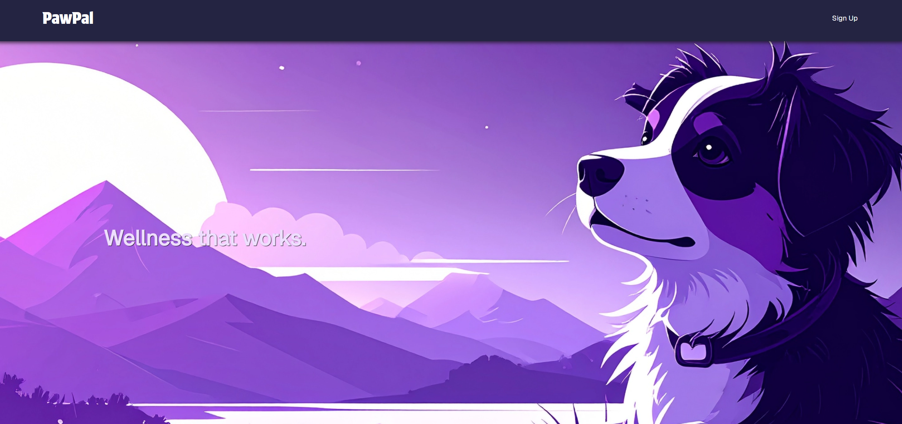
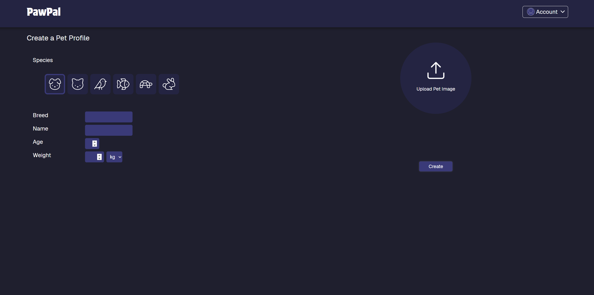

Class assigned project of creating a Pet Wellness Tracking App. The purpose of the app was to help users manage pet activity, monitor statistics, and organize pet profiles for all users.Starting off with the wireframes, we used a consistent color palette and design language with the colors of dark blue and purple. Because the project was supposed to be made for desktop and mobile, the versions are uniquely different from each other slightly, due to my partner and I focusing on different versions during the process. For the desktop, there was some space left to avoid any complexity while the mobile version felt a little more cluttered. Throughout this project there were a lot of changes and information needing to be added for this website to work properly, such as making sure to add pets, edit your profile, see the dashboard or other tabs, and signing out.

There was a major challenge in this project where we tried to balance out the desktop and mobile layouts while keeping the user experience clear and consistent, but it didn't work out well. Another challenge was dealing with bugs and unfinished pages– especially with the dashboard and invisible navigation tabs. It was a struggle to overcome these issues. I tried to think of better designs and recognizable layouts to improve spacing in order to make the interface easier to navigate.
Although the website still had some bugs, this project helped with improving my confidence with CSS and responsive design. It also taught me how much planning is required for multiple screen sizes and frames.
You’ve reached the bottom! This is all I have for now-If you have any questions feel free to ask me!